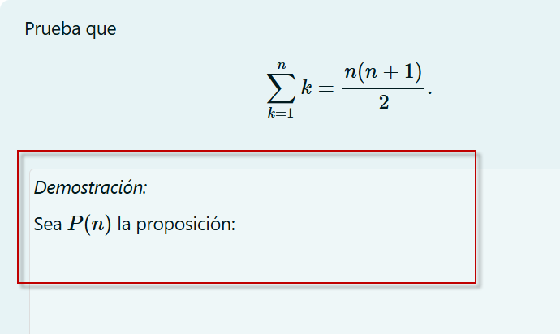
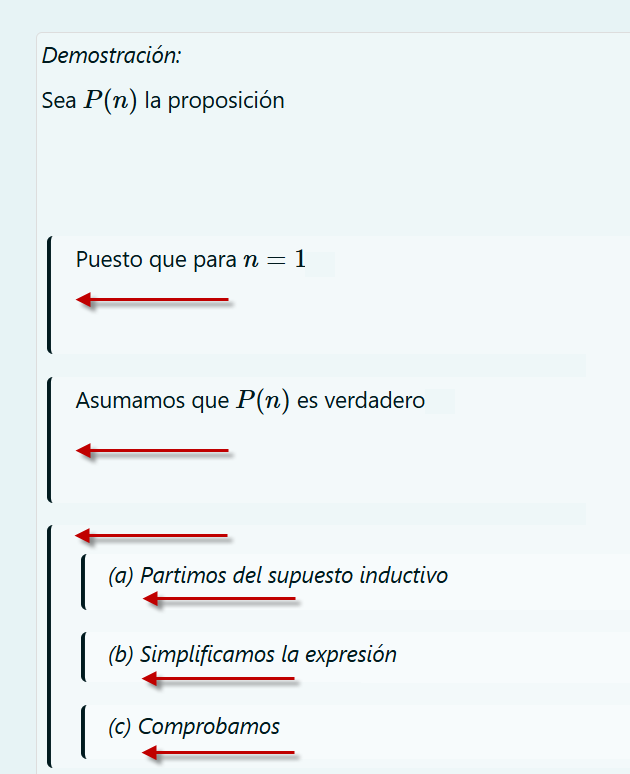
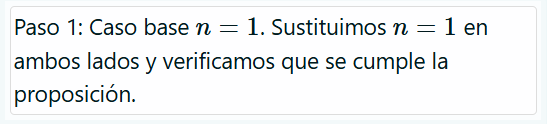
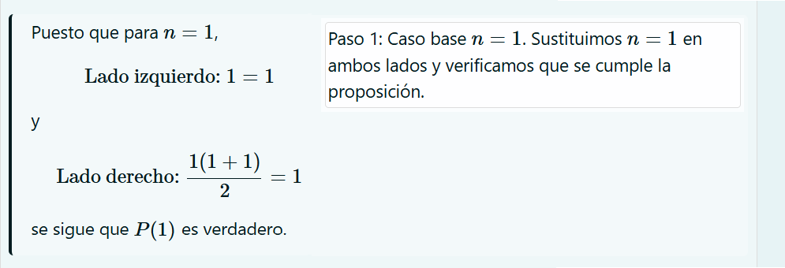
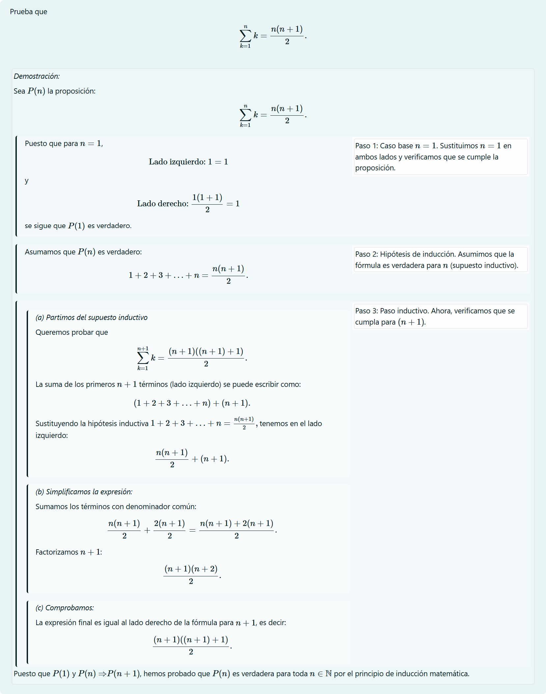

Bloques, dependencias y comentarios
STACK utiliza estilos CSS para lograr una presentación uniforme de demostraciones matemáticas y argumentos en general. Dichos estilos se encuentran en el archivo styles.css, ubicado en el nivel superior del complemento STACK. La apariencia final dependerá de la configuración de estos estilos. Las clases proof están diseñadas para estructurar y organizar visualmente la información en bloques, incluyendo la sangría y la disposición en columnas. En términos generales, estos estilos no establecen colores ni tipografías específicas, aunque sí definen variantes en el tono del fondo.
Las clases de styles.css se resumen a continuación:
| Clase | Para qué sirve | Cómo se ve |
| <div class="proof"> | Esta clase es un contenedor general de alto nivel que destaca el cuerpo de la demostración y permite reconocer en dónde empieza y termina. El contenedor es mínimo y sutil, en azul claro y, si bien no interfiere demasiado en un sentido visual, encapsula la demostración para distiguirla como una entidad distinta al enunciado del teorema en cuestión. |  |
| <div class="proof-block"> | Esta clase permite al docente resaltar subcomponentes de una demostración. Está pensada para ser un bloque de subdemostración anidado dentro de una demostración principal. No obstante, los bloques también pueden a su vez pueden anidarse entre sí. |  |
| <div class="proof-comment"> | Está diseñada para permitir agregar comentarios, hacer preguntas o actuar como la segunda columna en una demostración en dos columnas. |  |
|
<div class="proof-column"> <div class="proof-column-2"> |
Sirven para presentar la información de la demostración por columnas, que tienen un ancho fijo del 48% y éste se puede modificar. El diseño asume dos columnas: la de la izquierda (proof-column) para el cuerpo de la demostración y la de la derecha (proof-column-2) para colocar comentarios explicativos. |  |
El siguiente es un ejemplo que emplea todas estas clases para presentar a los estudiantes una demostracion por inducción. La idea es no solo mostrar la información pertinente, sino destacar de forma detallada la estructura del pensamiento matemático requerido para este tipo de demostraciones.

Notemos que en este caso no tenemos propiamente una pregunta en el reactivo STACK, es decir, no hay entradas ni los correspondientes árboles de respuestas potenciales o retroalimentaciones.